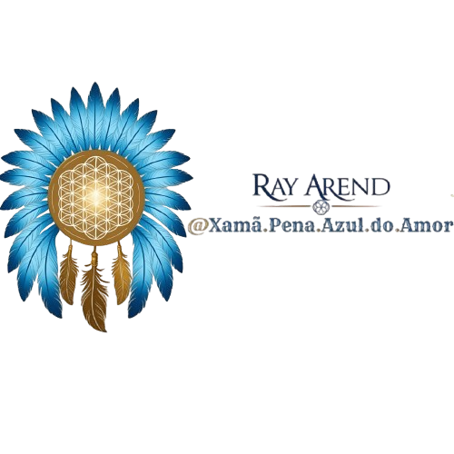

Xamã Pena Azul do Amor
Cortes Energéticos e Chamado da Alma Gêmea.
Proposta v0.1 · 25/10/2026Instagram @xama.pena.azul.do.amor · Facebook da marca a confirmar · TikTok a criar
Paleta editorial
Cores observadas nos carrosséis existentes. Clique para copiar o hexadecimal. A leitura final depende do contraste entre fundo e texto.
#14213D
#F6F0E6
#E8762C
#C9C3B8
#7A7468
Logo e assinatura
Símbolo
PNG transparente, 500×500. Manter proporção e respiro. Baixar original.


Assinatura existente
PNG transparente, 500×500. Revisar nitidez do texto e margens antes da aplicação. Baixar original.

Tipografia e aplicação
Você pode amar sem se abandonar.
Uma ideia por slide. Texto legível, espaço para respirar e um convite claro no encerramento.
As fontes são carregadas pelo Google Fonts quando há internet. Fallback: Georgia e Arial.
Que relação você deseja construir?
Respeito, presença e reciprocidade também fazem parte dessa conversa.
Sombras propostas
Sem sombra
Padrão para composição tipográfica.
Cartão suave
Separação discreta sobre o creme. CSS: 0 12px 32px rgba(20,33,61,0.16).
Os efeitos são propostas novas. Ajustar visualmente no Canva: a escala do editor não equivale diretamente a pixels CSS.
Este guia prepara o pacote da marca. O design de referência ainda não pôde ser inspecionado; não houve criação de Brand Kit nativo nem envio de logo ao Canva.
Ver roteiro de aplicação